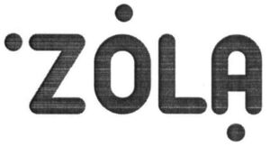

Trade Mark Journal No.2025/033 15 August 2025
WO0000001684078 (3,21)
Office of origin: Ukraine
Date of International Registration:24 May 2022
Date of designation in the UK:
5 December 2024

- Class 3
- Amber [perfume]; antiperspirants [toiletries]; balms, other than for medical purposes; basma [cosmetic dye]; whiting; lip glosses; petroleum jelly for cosmetic purposes; cotton wool for cosmetic purposes; cotton swabs for cosmetic purposes; bleaching preparations [decolorants] for cosmetic purposes; decorative transfers for cosmetic purposes; moustache wax; make-up; lipsticks; scented water; extracts of flowers [perfumes]; herbal extracts for cosmetic purposes; ethereal essences; essential oils; greases for cosmetic purposes; hair dyes; ionone [perfumery]; adhesives for affixing false eyelashes; adhesives for affixing false hair; adhesives for cosmetic purposes; collagen preparations for cosmetic purposes; hair conditioners; cosmetics; eyebrow cosmetics; cosmetics for children; beauty masks; cosmetic preparations for eyelashes; cosmetic preparations for skin care; tailors' wax; skin whitening creams; cosmetic creams; hair lotions; lotions for cosmetic purposes; deodorant soap; cakes of toilet soap; almond soap; soap; musk [perfumery]; mint for perfumery; mint essence [essential oil]; cosmetic kits; eyebrow pencils; cosmetic pencils; oils for toilet purposes; oils for perfumes and scents; oils for cosmetic purposes; oil of turpentine for degreasing; bases for floral perfumes; cleansing milk for toilet purposes; degreasing products for cleaning purposes; scouring solutions; perfumery; perfumery for cosmetics; perfumes; gel eye patches for cosmetic purposes; polishing wax; pomades for cosmetic purposes; hair straightening preparations; depilatory preparations; hair waving preparations; sun-tanning preparations [cosmetics]; make-up removing preparations; make-up preparations; shining preparations [polish]; aloe vera preparations for cosmetic purposes; make-up powder; tissues impregnated with cosmetic lotions; tissues impregnated with make-up removing preparations; turpentine for degreasing; rose oil; toilet water; mascara; cosmetic dyes; phytocosmetic preparations; lipstick cases; henna [cosmetic dye]; dry shampoos; shampoos; shoemakers' wax; false eyelashes; false nails.
- Class 21
- Make-up sponges; cosmetic utensils; cosmetic spatulas; material for brush-making; make-up brushes; make-up removing appliances; tar-brushes, long handled; scrubbing brushes; eyebrow brushes; eyelash brushes.
Kobrusieva Tetiana Borysivna
Representative: YEVHEN Y. KHELEMSKYI, Vul. Holosiivska, 10, room 96, Kyiv 03039, UKRAINE